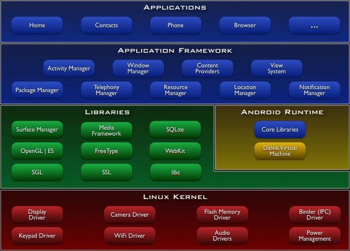

Android Dev Guide学习笔记 What is Android?
文章目录
Android是什么？
功能
- Application framework允许重用和替换的组件
- Dalvik虚拟机
- 集成了基于WebKit引擎的浏览器
- 基于2D图形库的优化过的图形；基于OpenGL ES 1.0规范的3D图形（可选的硬件加速）。
- SQLite来支持结构化数据存储
- 多媒体方面 支持：音频、视频和图像支持（MPEG4、H.264、MP3、AAC、AMR、JPG、PNG、GIF）
- GSM通讯（依赖于硬件）
- 蓝牙、EDGE、3G和WiFi（依赖于硬件）
- 摄像头、GPS、罗盘和加速感应（依赖于硬件）
- 丰富的开发环境，包括：设备模拟器，用于调试的工具，内存和性能分析，和Eclipse IDE插件
Android架构
下图展示了Android操作系统的主要组件。 
应用程序
Android发布时一般带有一套核心应用程序，包括email客户端，SMS程序，日历，地图，浏览器，联系人和其它。所有应用都是用Java编写的。
应用程序框架
通过提供一个开放的开发平台。Android给开发者提供了构建极其丰富和具有创新性的应用的能力。开发者可以自由的获取硬件的好处，访问位置信息，执行后台服务，设置警报，在状态条上增加通知等等。
开发者可以像核心应用程序一样访问相同的应用程序框架提供的API。应用程序框架被设计为简单的可重用组件；任何应用程序都可以发布它自己的功能其它应用程序可以使用这些功能（比如框架提供的安全性约束）。同样的机制也允许用户替换组件。
在所有应用程序下都是一套服务系统，它包括：
- 丰富和具有扩展性的一套Views，它可以用于构造应用程序，包括：列表、表格、文本框、按钮和甚至是可嵌入的浏览器。
- Content Providers允许应用程序访问数据或者共享自己的数据。
- Resource Manager提供访问非代码性的资源比如：本地化字符串、图片、布局文件。
- Notification Manager允许所有应用程序在状态条上显示自己的通知信息。
- Activity Manager管理应用程序和生命周期并提供了一个通用的导航堆栈（navigation backstack）。
程序库
Android包括一套用于Android系统组件的C/C++程序库。它通过Android应用程序框架暴露给开发人员。一些核心库如下：
- System C library - 源于BSD系统实现的标准C系统库（libc）被调整为适用于嵌入式Linux设备优化。
- Media Libraries - 基于PacketVideo的OpenCORE；这些程序库支持播放和记录许多流行的音频和视频格式，如：静态图片文件、MPEG4、H.264、MP3、AAC、AMR、JPG和PNG。
- Surface Manager - 管理从不同的应用程序访问显示子系统和无缝集成2D和3D图形。
- LibWebCore - 一个现代的浏览器引擎来支持Android浏览器和可嵌入的web view。
- SGL - 底层的2D图形引擎。
- 3D libraries - 基于OpenGL ES 1.0 APIs实现；这个库支持硬件3D加速（在可用时）或包含高度优化的3D软件光栅。
- Freetype - 位图和矢量字体渲染。
- SQLite - 为所有应用程序提供了一个功能强大的轻量级关系数据库引擎。
Android运行环境
Android包含了一套核心程序库在Java程序中绝大部分的功能都是可用的。
所有Android应用程序运行在自己的进程中，使用自己的Dalvik虚拟机实例。Dalvik虚拟机被编写为可以有效的运行多个虚机。Dalvik虚拟机上的执行文件是Dalvik可执行文件格式（.dex）它被优化为最小的内存占用。这个虚拟机是基于寄存器的，可以运行Java语言编译的被“dx”工具转译为dex格式的class。
Dalvik虚拟机依赖于Linux内核提供的底层功能，如：线程和底层的内存管理。
Linux内核
Android的核心系统服务依赖于Linux 2.6，如：安全、内存管理、进程管理、网络栈和驱动模型。内核也扮演了硬件和其它软件栈之间的抽像层。
文章作者 Jamsa
上次更新 2010-07-30